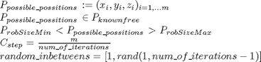
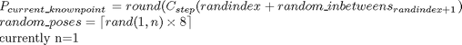

NBV
Description: This function works out the best weighted view within a given known area, all places are considered this will go through the known places on the border, then try each one of the 8 possible directions it will weight the different areas and it will come up with several possilbe poses and their information gain. Sets bestviews to be the top X best poses and their scan views
Contents
- Function Call
- Variables
- Determine posible poses
- Go through all known places in the workspace and tries different views
- TEMP display points and their directions
- Check which robot poses are possible then get a path
- If none were valid display message else save as bestviews
- Display Results - currently commented
- FUNCTION: orderbestviews_local
Function Call
- Inputs: Null
- Returns: Null
function NBV()
Variables
Clear out bestviews
clear global bestviews; % Declares variables used global r workspace bestviews Q optimise; num_bestviews=optimise.num_bestviews; for i=1:num_bestviews bestviews(i).addinfo=0; bestviews(i).chosenview=[1,1,1]; bestviews(i).scanorigin=[0,0,0]; bestviews(i).handle=[]; bestviews(i).valid=-1;%if this vie hasn't been set end %make up a structure 8 by 3 of all possible views for currentview=0:7 chosenview=dec2bin(currentview,3); chosenview_array(currentview+1).val=unit(2*[str2double(chosenview(1)),str2double(chosenview(2)),str2double(chosenview(3))]-1); end % This starts the timing clock timetaken=clock; % this is how iterations we go through (we actually go from 0->this minus 1) num_of_iterations=num_bestviews*2;
Determine posible poses

% get a list of all the possible positions out of all known positions possible_possitions=workspace.knowncoords(GetImpLevInfo(workspace.knowncoords),:); % get rid of the points around the robot crouch pose (known to be safe) index=find((possible_possitions(:,1)<workspace.robotsize(1,2) & possible_possitions(:,1)>workspace.robotsize(1,1)) &... (possible_possitions(:,2)<workspace.robotsize(2,2) & possible_possitions(:,2)>workspace.robotsize(2,1)) &... possible_possitions(:,3)<workspace.robotsize(3,2)); newindex=setdiff([1:size(possible_possitions,1)]',index); possible_possitions=possible_possitions(newindex,:); %determine the step size through points constant_step=size(possible_possitions,1)/num_of_iterations; %the first random num is 1 so we have a valid first known point random_inbetweens=[1,rand(1,num_of_iterations-1)];
Go through all known places in the workspace and tries different views

for randindex=0:num_of_iterations-1 %this will give an even spread since we are going to go through an get %at least by increments of about num_bestviews/2 %(0->num_bestviews/2-1,num_bestviews/2->2*num_bestviews-1,..etc) %so this way we get the top and we will check 2*num_bestviews to get the top few current_knownpoint=round(constant_step*(randindex+random_inbetweens(randindex+1))); %this should only be valid if it is inside the working range of robot scan_origin=possible_possitions(current_knownpoint,:); %want to have 1 random pose directions (since we could end up with 2 %poses with the same x and z but different y and these are the same %with current rotational method of estimiation random_poses=ceil((rand(1,1)*8)); for currentview=random_poses tr=[chosenview_array(currentview).val(1),0,0,scan_origin(1); 0,chosenview_array(currentview).val(2),0,scan_origin(2); 0,0,chosenview_array(currentview).val(3),scan_origin(3); 0,0,0,1]; % Check which points are covered by a scan potentiallyknown=nbv_volume(tr); % If unchecked potential information is assumed optimal is there enough to be more than the least current bestview if (size(potentiallyknown,1)*workspace.dotweight_Sum)>bestviews(num_bestviews).addinfo %weights the potentially known information so as to hopefully filter weighted_potentiallyknown=getweighted_addinfo(potentiallyknown); if bestviews(num_bestviews).addinfo<weighted_potentiallyknown %this is very time consuming sorting out additional info gained addinfo=setdiff(potentiallyknown, workspace.knowncoords,'rows'); % weighted actual new additional info weighted_addinfo=getweighted_addinfo(addinfo); %checks this weighted info against least current best view then adds to list if it is if bestviews(num_bestviews).addinfo<weighted_addinfo %order these new weighted bestviews bestviews=orderbestviews_local(num_bestviews,bestviews,weighted_addinfo,chosenview_array(currentview).val,scan_origin,addinfo,tr); end %endif current add info greater than last one saved? end end end end
TEMP display points and their directions
% for cur_view=1:num_bestviews % if bestviews(cur_view).valid~=-1 % tempdothandle(cur_view)=... % plot3(bestviews(cur_view).scanorigin(1),... % bestviews(cur_view).scanorigin(2),... % bestviews(cur_view).scanorigin(3),'black*'); % templinehandle(cur_view)=... % plot3([bestviews(cur_view).scanorigin(1),bestviews(cur_view).scanorigin(1)+bestviews(cur_view).chosenview(1)],... % [bestviews(cur_view).scanorigin(2),bestviews(cur_view).scanorigin(2)+bestviews(cur_view).chosenview(2)],... % [bestviews(cur_view).scanorigin(3),bestviews(cur_view).scanorigin(3)+bestviews(cur_view).chosenview(3)],'color',[0.8,0.8,0.8]); % %pause(0.1) % end % end % for cur_view=1:num_bestviews % try delete(templinehandle(cur_view));end; % try delete(tempdothandle(cur_view));end; % end
Check which robot poses are possible then get a path
unknownweight=calunknownweight(); valid_count=0; for cur_view=1:num_bestviews if bestviews(cur_view).valid~=-1 use_quickver=true; % try and get a pose to reach the desired point try [bestviews(cur_view).Q,bestviews(cur_view).valid]=streamOnto_mine_manystarts(r,bestviews(cur_view).scanorigin,bestviews(cur_view).chosenview,Q,use_quickver); catch; keyboard; end % If a pose was found try and get a path if bestviews(cur_view).valid==1 %have to try and get a path and see if this is still valid tryalternate=0;check_arm_perms=1;useMiddleQ2=1;numofPPiterations=20; [bestviews(cur_view).valid,bestviews(cur_view).all_steps] = pathplanner(bestviews(cur_view).Q,tryalternate,check_arm_perms,useMiddleQ2,numofPPiterations); %if there is a pose and a path there if bestviews(cur_view).valid==1 valid_count=valid_count+1; %work out the actual direction tr=fkine(r,bestviews(cur_view).Q); bestviews(cur_view).tr=tr; %update the expected info removing selfscanning points and with new tr bestviews(cur_view).expectedaddinfo=nbv_volume(tr,bestviews(cur_view).Q); %update the weighted addinfo give new expectedaddinfo bestviews(cur_view).addinfo=getweighted_addinfo(bestviews(cur_view).expectedaddinfo)/unknownweight; %save to a temp variable which will later update bestviews temp_bestviews(valid_count)=bestviews(cur_view); if valid_count==optimise.valid_max display(strcat('got enough poses after',num2str(cur_view),' poses so breaking out')); break; end end end end end
If none were valid display message else save as bestviews
if valid_count==0 msgbox('there were no valid solutions found, suggest you increase how many best views are taken'); else %make the bestviews only the valid ones bestviews=temp_bestviews; end %Order the bestviews order_bestviews()
Display Results - currently commented
display(strcat('TOTAL Time taken is: ', num2str(etime(clock,timetaken))));
FUNCTION: orderbestviews_local
Description: This goes through and updates our possible best views database
function bestviews=orderbestviews_local(num_bestviews,bestviews,addinfo,chosenview,scan_origin,expectedaddinfo,tr) %go through each best view for i=num_bestviews:-1:1 if addinfo<=bestviews(i).addinfo %only if we are someway up (greater than the first) the list then do we need to change them if i<num_bestviews for j=num_bestviews:-1:i+2 bestviews(j)=bestviews(j-1); end bestviews(i+1).addinfo=addinfo; bestviews(i+1).chosenview=chosenview; bestviews(i+1).scanorigin=scan_origin; bestviews(i+1).valid=0; bestviews(i+1).expectedaddinfo=expectedaddinfo; bestviews(i+1).tr=tr; end %now break out of the loop break; elseif i==1 %if we have been through all values for j=num_bestviews:-1:i+1 bestviews(j)=bestviews(j-1); end bestviews(i).addinfo=addinfo; bestviews(i).chosenview=chosenview; bestviews(i).scanorigin=scan_origin; bestviews(i).valid=0; bestviews(i).expectedaddinfo=expectedaddinfo; bestviews(i).tr=tr; break; end end